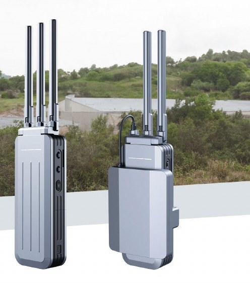

Skyfend Tracer
STP101 · Носимый детектор и пеленгатор дронов
- Диапазон обнаружения
- 0,4–6 ГГц
- Дальность обнаружения
- ≥ 3 км (прямая видимость)
- Частота обновления
- < 3 с (по умолчанию 2,4 и 5,8 ГГц)
- Одновременных целей
- ≥ 10
Все характеристики
| Диапазон обнаружения | 0,4–6 ГГц |
|---|---|
| Дальность обнаружения | ≥ 3 км (прямая видимость) |
| Частота обновления | < 3 с (по умолчанию 2,4 и 5,8 ГГц) |
| Одновременных целей | ≥ 10 |
| Диапазоны пеленгации | 2,4 / 5,2 / 5,8 ГГц |
| Точность пеленгации | < ±15° |
| Обнаруживаемые модели | DJI, Autel, FIMI, Parrot и др. |
| Перехват видео | RushFPV, Matekeey, RXC, TBS, SpeedyBee, PandaRC, iFlight (аналоговое видео) |
| Габариты | 240×89×75 мм (сложен) |
| Масса | 1100 ± 50 г |
| Оповещение | Вибро / звук / световая индикация |
| Класс защиты | IP65 |
| Аккумулятор | 11,55 В, 9000 мА·ч, ≥ 5 ч работы |
ЦенаПо запросу